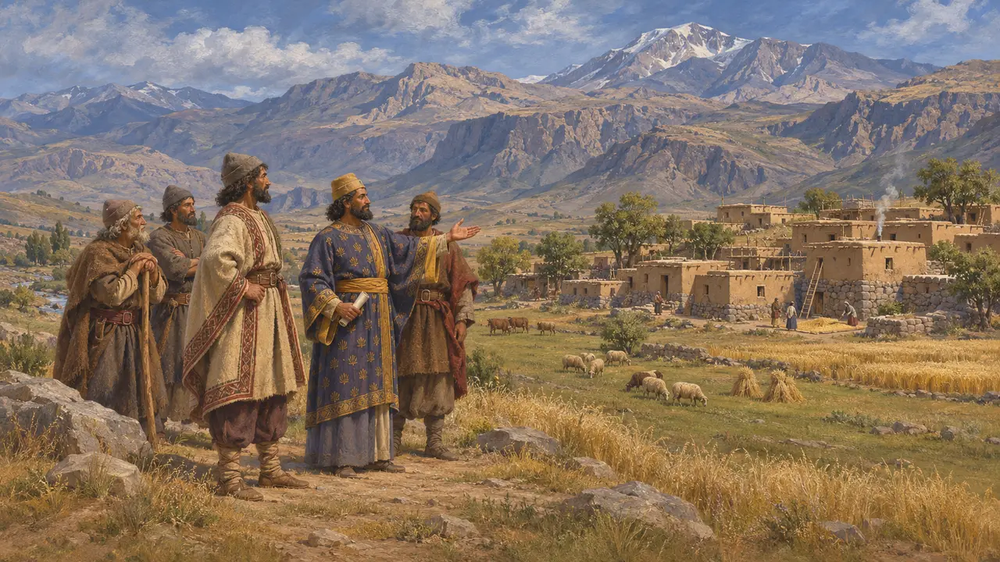
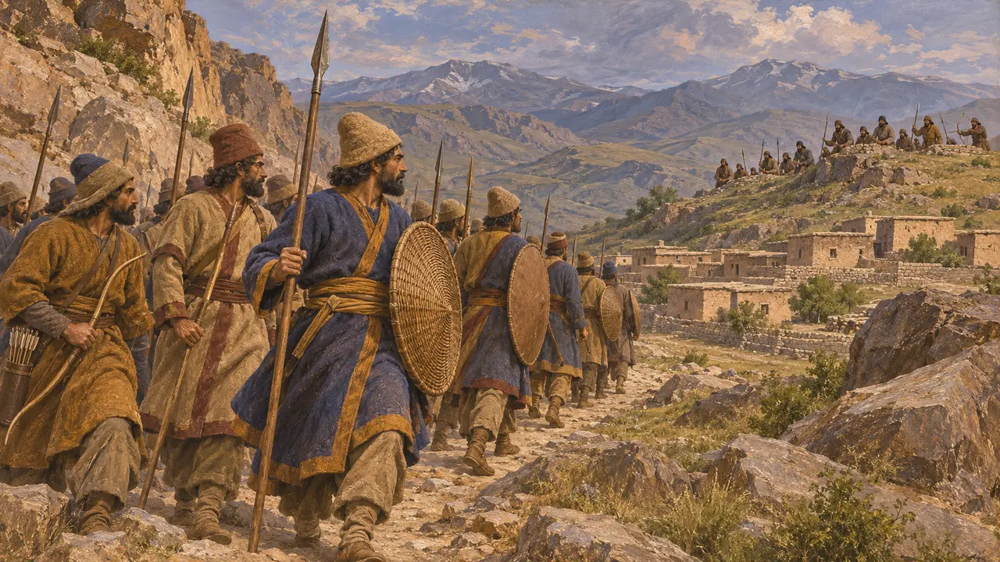
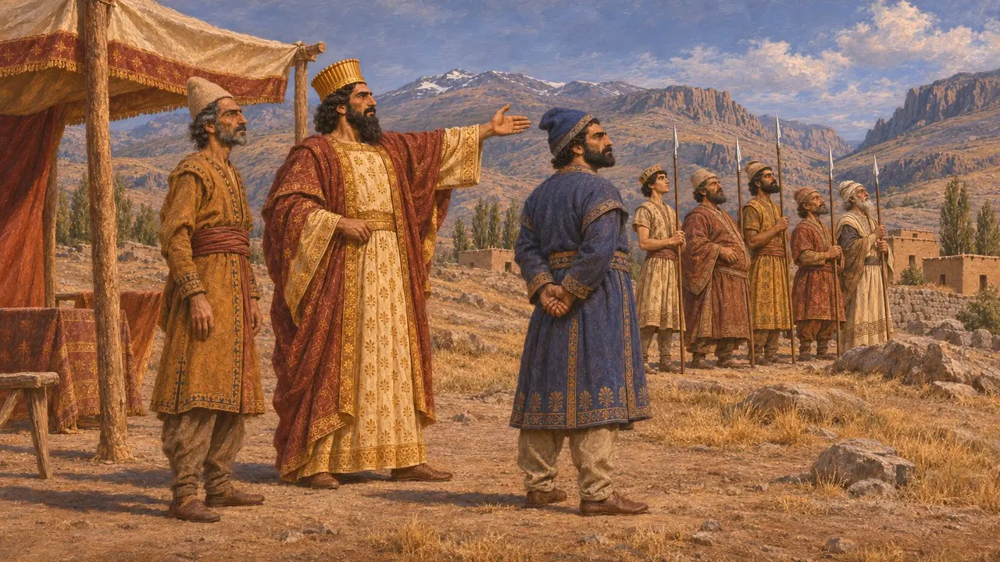
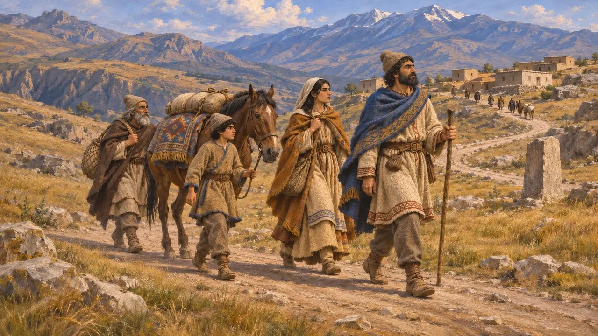
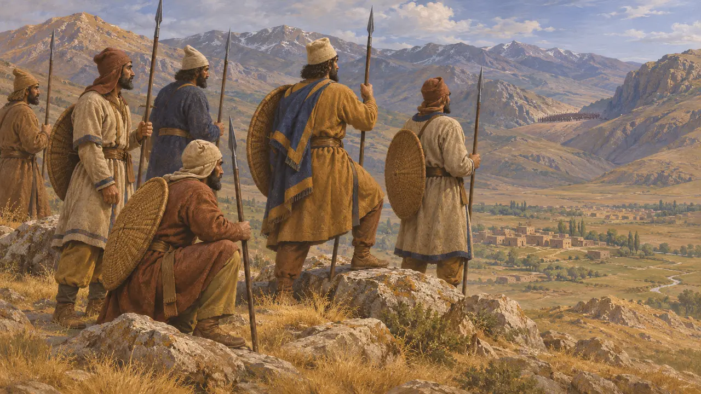

ارمنستان سرزمینی کوهستانی در شمال آشور بود که در سنگنبشتههای داریوش ارمینه نام دارد. این سرزمین در 522-521 پ.م. بر داریوش شورید و فرماندهانی که او فرستاد، نه خود شاه، آن را بازپس گرفتند. سنگنبشتهٔ بیستون منبع اصلی دربارهٔ این لشکرکشیهاست.
در بازی: بازی نام ارمنستان را فقط در گاهنامه و در مقالهٔ رویداد جنگ آنجا میآورد، جایی که دادرشیش و وئومیسه با شورشیان میجنگند. ارمنستان مرحله، ساختمان یا سازوکار ویژهٔ خود را ندارد.



دادرشی و وئومیسه
در اسنادداریوش از دو سردار نام میبرد که هر دو بندگان او بودند. دادرشی، ارمنی، در سه نبرد با شورشیان جنگید و وئومیسه، پارسی، در دو نبرد دیگر جنگید که یکی در آشور رخ داد. سنگنبشته هر نبرد را با روز، ماه و جا تاریخگذاری میکند و ثبت میکند که سپاه داریوش پیروز شد. این پیروزیها از آنِ شاه روایت میشوند که به دست سردارانش به دست آمدهاند.
DB §26-30

هرودوت دربارهٔ ارمنیان
روایت باستانیهرودوت از این شورش سخنی نمیگوید. او ارمنستان را ایالتی باجگزار از قلمرو داریوش میشمارد و میگوید ارمنیان مهاجرانی از فریگیه بودند. او همچنین از راه شاهی یاد میکند که از ارمنستان میگذشت. سنگنبشتههای شاهی خاستگاه فریگیهای آنان را تأیید نمیکنند.
Herodotus 3.93; 5.52; 7.73

میدانهای نبرد و روایت یگانه
مورد مناقشهچند میدان نبرد که در بیستون نام برده شدهاند، در ارمنستان و آشور یا نزدیک آنها قرار دارند و پژوهشگران امروزی بر سر جایگاه همهٔ آنها توافق ندارند. این لشکرکشی تقریباً فقط از متن خود داریوش شناخته میشود که برای توجیه فرمانروایی او نوشته شده بود. اینکه جنگ چه مدت ادامه داشت و شورش تا چه اندازه جدی بود، به همین یک روایت وابسته است.
P. Briant, From Cyrus to Alexander, 2002
منابع
- Behistun inscription, DB §6 and §26-30
- Herodotus 3.93
- Herodotus 5.52
- Herodotus 7.73
- P. Briant, From Cyrus to Alexander, 2002